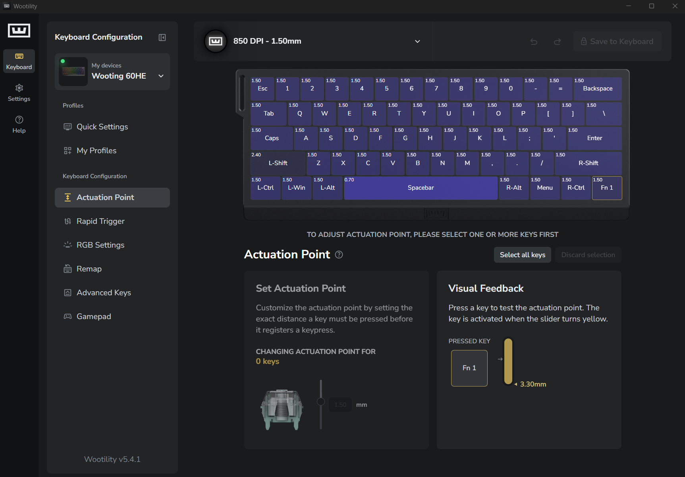
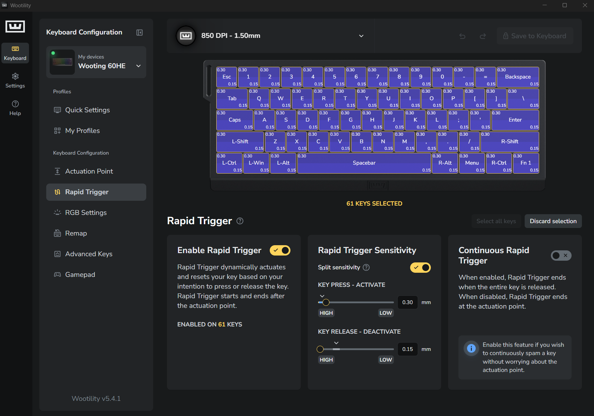
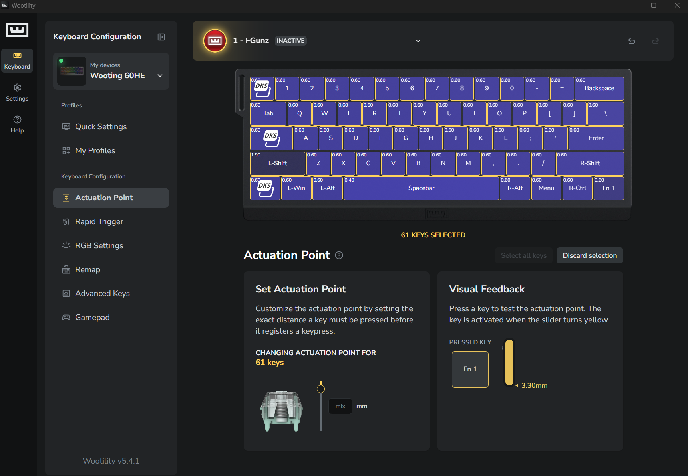
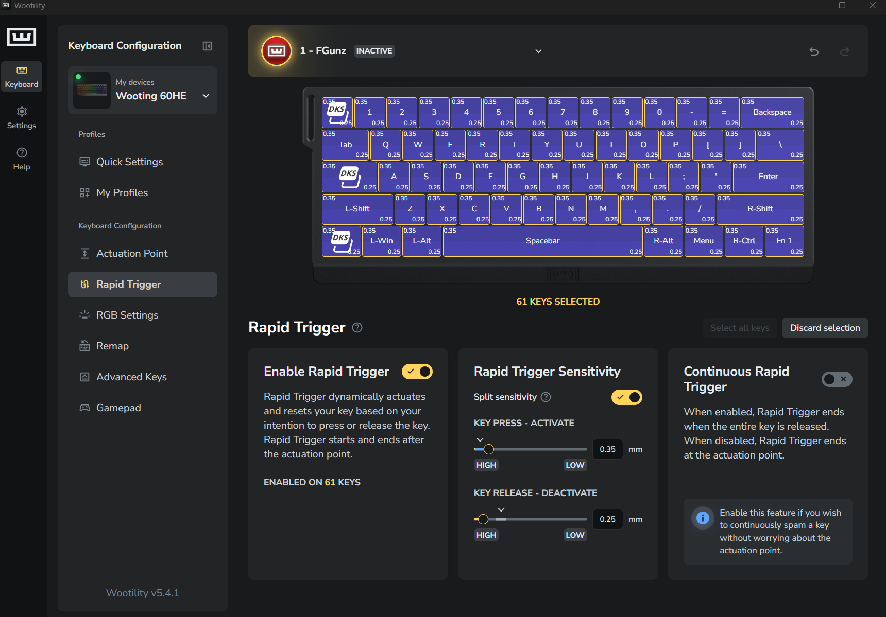

This is the personal side of the project: what I noticed, what I changed, what happened, and what it taught me.
How to read this: the public guide explains Rapid Trigger for any GunZ player. These notes explain my process and why the guide changed.
02
TL;DR
The whole finding in one minute
I wanted one keyboard to stay comfortable for normal use and still feel fluent in GunZ.
I kept an everyday profile that still feels like a keyboard and lets me type at 100+ WPM.
I use Rapid Trigger to reduce the extra key travel between GunZ inputs—not to turn the keyboard into a different device.
reduces the upward release travel required before OFF. It does not remove all input or game delay.
sets the downward re-press travel before the next ON. I use it to clean up the dash pace I am trying to perform.
I also keep a GunZ-specific profile when I want more intentional control over movement and timing.
I check the mouse and screen separately before blaming a clean keyboard result for an aim problem.
What I learned: keep the keyboard comfortable, let RT D clear the old input, let RT A shape the next re-press, and stop once the movement stays deliberate.
03
My everyday profile
Keeping my keyboard as a keyboard
What I wanted
One profile I can trust for normal typing, work, and daily use.
Normal typing should not be sacrificed for one game.
My WPM should stay at 100+ without the keyboard feeling nervous.
What Rapid Trigger adds for GunZ
RT D lets the active key turn OFF after a chosen amount of upward movement.
That reduces the required release travel between inputs; it does not remove every kind of delay.
RT A lets the next ON happen after a chosen amount of downward movement following reversal.
That gives me a way to clean up the pace between dashes without changing the first actuation just to chase speed.
What it means to me
The keyboard keeps its normal everyday feel.
Rapid Trigger helps the same keyboard keep GunZ movement consistent and fluent.
I get the benefit of shorter OFF/ON travel while keeping the first press comfortable.
My wording, fact-checked: RT D reduces required release travel. RT A reduces or increases required re-press travel. Neither setting promises a fixed time saving.
04
My GunZ-specific profile
A separate choice for more intentional movement
Why I keep it
I do not always want the everyday profile to carry every GunZ experiment.
A separate copy lets me tune around movement and timing without losing the profile I trust for everything else.
It gives me a more direct, intentional feel over character movement when I choose to use it.
The boundary
This is my personal profile decision, not a requirement for Rapid Trigger.
The public guide teaches the controls and method without asking anyone to copy my settings.
The only current configuration values recorded here are the keyboard values visible in my Wootility screenshots below.
05
What RT D and RT A mean to me in GunZ
Official behavior first · GunZ connection second
Official behavior: the upward distance an active key travels before the keyboard reports OFF.
GunZ connection: how much I have to lift before the old direction or action clears.
When it helps: the release happens with less upward travel, so the next part of my movement is not waiting on a deep reset.
When it is too low: small pressure changes can report OFF earlier than I meant.
When it is too high: the old input can stay active longer than my movement rhythm expects.
Official behavior: the downward distance after reversal before the keyboard reports the next ON while Rapid Trigger is active.
GunZ connection: how much I have to re-press before the next direction, dash, or repeated action begins.
When it helps: I can match the re-press travel to the dash pace I am trying to perform.
When it is too low: a small bounce or unfinished motion can start the next input early.
When it is too high: the next input can feel late or fail to arrive before my finger reverses again.
The part I had to correct: RT A does not directly set GunZ speed. It sets a re-press distance. My finger motion turns that distance into a real input pace.
06
What changed my thinking
From a gaming-only tune to a full input check
What I saw
A very shallow actuation could feel quick in GunZ and still make normal typing harder.
A movement could become clean while my aim still landed short or long.
Changing the keyboard again could hide the aim problem instead of identifying it.
What I changed
I stopped using “lowest possible” as the goal.
I checked that my everyday actuation still supported normal typing.
I separated keyboard movement from mouse coverage before making another keyboard change.
What happened
The keyboard could stay comfortable while Rapid Trigger handled the extra release and re-press travel for GunZ.
I could tell whether a miss came from movement pacing or from where my aim landed.
The method became easier to repeat because each setting had one job.
What it taught me
Clean movement comes before judging aim during movement.
A faster keyboard result is not automatically a better full-input result.
Verify the mouse before changing a keyboard setup that is already moving correctly.
07
My current method
The short version I can repeat
Start with the keyboard I can live with.I use typing practice to confirm that normal use still feels normal.
Verify the mouse separately.I check pointer control, the game view, and target tracking before I use movement to judge aim.
Save a clean GunZ base.I duplicate it before testing so I can always return.
Tune RT D for deliberate OFF.I want the old input to clear without tiny lifts cutting it off.
Tune RT A for deliberate next ON.I want the next dash to match my intended re-press pace.
Test the move alone.Training tells me whether the movement itself is clean.
Test against players.PvP tells me whether the result stays clean when the pace changes.
Check aim only after movement is clean.If aim still lands short or long, I check the mouse instead of making Rapid Trigger faster.
Keep it over time.I save the last repeatable result and change one cause only when a symptom repeats.
The order matters: comfortable keyboard → verified mouse → clean release → clean re-press → training → PvP → long-term check.
08
My Wootility records
The source of the configuration values shown here
How to read these: the profile names are personal labels. The comparison below uses regular-key values. The screenshots also show that I use separate values on some keys.
Standard / everyday record
Regular-key actuation1.50 mm
RT A · Activate0.30 mm
RT D · Deactivate0.15 mm
Visible key exceptionsL-Shift 2.40 mm · Spacebar 0.70 mm

Actuation screen. Regular keys show 1.50 mm; the image also records per-key exceptions.

Rapid Trigger screen. Split sensitivity shows 0.30 mm Activate and 0.15 mm Deactivate.
GunZ-specific record
Regular-key actuation0.60 mm
RT A · Activate0.35 mm
RT D · Deactivate0.25 mm
Visible key exceptionsL-Shift 1.90 mm · Spacebar 0.40 mm

Actuation screen. Regular keys show 0.60 mm; the image records the intentional per-key exceptions.

Rapid Trigger screen. Split sensitivity shows 0.35 mm Activate and 0.25 mm Deactivate.
09
What I kept from V1
The findings that still matter
Find one repeatable problem before changing a value.
Change one setting at a time.
Training and PvP answer different questions.
Save checkpoints so a test never destroys the last good result.
Copy the process, not someone else’s final numbers.
Keep definitions separate from personal conclusions.
What changed: the public site now stays dedicated to Rapid Trigger. This notebook holds the personal full-input story.
10
Evidence and limits
What I know · what I observed · what I am not claiming
Documented behavior
Rapid Trigger uses movement direction and distance for repeated OFF and ON states.
Split sensitivity provides separate deactivate/upstroke and activate/downstroke distances.
Smaller distances require less physical travel.
My observations
A comfortable first actuation and useful Rapid Trigger distances can live in the same profile.
RT D and RT A feel different when I isolate the release and re-press.
Mouse verification prevents me from tuning clean keyboard movement around an aim problem.
What I am not claiming
My profiles are correct for every player.
A millimeter value equals a fixed amount of time.
Every GunZ miss is caused by a keyboard or mouse setting.
Personal testing replaces measured game or server data.